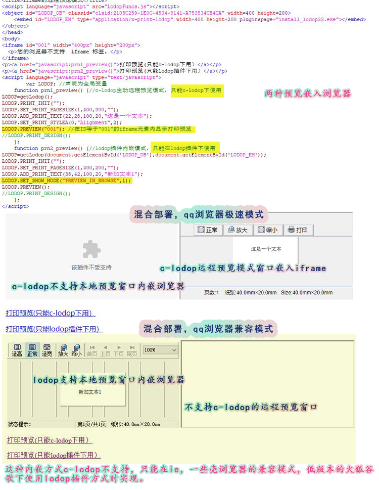

打印预览内嵌浏览器的两种方法
lodop是浏览器插件，可以内嵌浏览器，而c-lodop是本地服务，无法内嵌浏览器。样例36，样例A2这种打印设计内嵌页面，进行添加或删除等打印项操作，这种只能在lodop插件方式下使用，IE浏览器，一些壳浏览器的兼容模式，低版本的火狐谷歌，可以测试这些样例。
http://www.c-lodop.com/demolist/PrintSample36.html
http://www.c-lodop.com/demolist/PrintSampleA2.html
c-lodop的除了有代替lodop插件的客户端本地方式，还有几种打印，AO端桥打印等方式，后两种角色属于远程打印方式，远程打印方式不支持打印设计打印维护和远程写文件，但是远程可以预览或打印。
三种角色及使用方法：
参考http://www.c-lodop.com/demolist/t1.html
远程预览的窗口，和客户端本地打印窗口不同。
这种窗口，在客户端本地方式时也可以用语句实现远程打印预览窗口，也可以显示在某个iframe里。
简短问答：
1.官网内嵌的样例显示：该插件不受支持。
参考http://www.c-lodop.com/faq/pp21.html
高版本的火狐谷歌不再支持np插件方式，只能用c-lodop，c-lodop不支持内嵌。
可以在ie等支持np插件的浏览器下查看官网的需要内嵌的样例效果。
2.c-lodop的预览怎么在iframe中显示
参考http://www.c-lodop.com/faq/pp28.html
显示在iframe中。
3.c-lodop的预览在iframe中显示，不显示。
当前使用的是否是c-lodop，并参考http://www.c-lodop.com/faq/pp28.html
--简短问答结束----
（该文例子中的两个方法不能在同一个页面上使用，因为该例子是用的混合部署方式）
图示中的两个内嵌，是点完一个再切换模式点的另一个：
一个是lodop插件方式的object对象内嵌浏览器，用的是qq浏览器的兼容模式下。
第二个是c-lodop远程预览模式，用的是qq浏览器的极速模式下。
这两个内嵌不能再同一个浏览器或同一个模式下显示：
c-lodop不是插件，不支持object对象内嵌那种方式。
lodop不能用远程预览模式。
远程预览模式再iframe内显示（只能c-lodop）
内嵌浏览器方式（只能是lodop）
测试例子地址：iframe的c-lodop远程预览模式
测试代码：
<head> <meta http-equiv="Content-Type" content="text/html; charset=utf-8" /> <title>iframe的远程预览模式</title> <script language="javascript" src="LodopFuncs.js"></script> <object id="LODOP_OB" classid="clsid:2105C259-1E0C-4534-8141-A753534CB4CA" width=400 height=200> <embed id="LODOP_EM" type="application/x-print-lodop" width=400 height=200 pluginspage="install_lodop32.exe"></embed> </object> </head> <body> <iframe id="001" width="400px" height="200px"> <p>您的浏览器不支持 iframe 标签。</p> </iframe> <p><a href="javascript:prn1_preview()">打印预览(只能c-lodop下用）</a></p> <p><a href="javascript:prn2_preview()">打印预览(只能lodop插件下用）</a></p> <script language="javascript" type="text/javascript"> var LODOP; //声明为全局变量 function prn1_preview() {//c-lodop主动远程预览模式，只能c-lodop下使用 LODOP=getLodop(); LODOP.PRINT_INIT(""); LODOP.SET_PRINT_PAGESIZE(1,400,200,""); LODOP.ADD_PRINT_TEXT(22,28,100,20,"这是一个文本"); LODOP.SET_PRINT_STYLEA(0,"Alignment",2); LODOP.PREVIEW("001"); //在ID等于“001”的iframe元素内显示打印预览 //LODOP.PRINT_DESIGN(); }; function prn2_preview() {//lodop插件内嵌模式，只能在lodop插件下使用 LODOP=getLodop(document.getElementById('LODOP_OB'),document.getElementById('LODOP_EM')); LODOP.PRINT_INIT(""); LODOP.SET_PRINT_PAGESIZE(1,400,200,""); LODOP.ADD_PRINT_TEXT(38,42,100,20,"新加文本1"); LODOP.SET_SHOW_MODE("PREVIEW_IN_BROWSE",1); LODOP.PREVIEW(); //LODOP.PRINT_DESIGN(); }; </script> </body>图示：

之前关于lodop插件方式内嵌的相关博文：Lodop打印控件在页面如何使用、Lodop删除语句Deleted只能内嵌设计维护可用、【JS新手教程】弹出两层div，及在LODOP内嵌上层